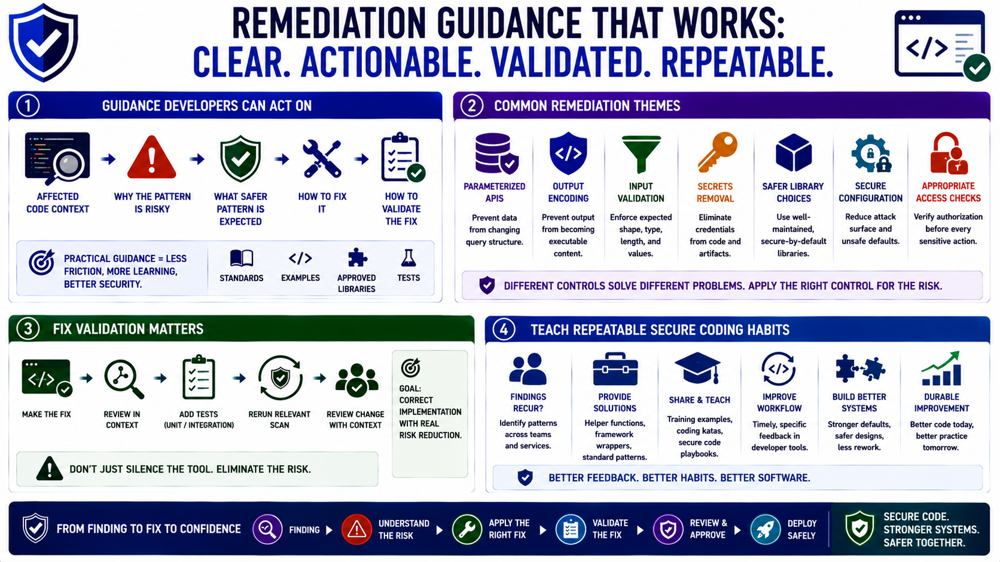

Remediation and Developer Workflow
Connecting to LMS... Progress: in progress

Narration
Remediation guidance should be clear enough for developers to act on. A good finding explains the affected code context, why the pattern is risky, what safer pattern is expected, and how the fix can be validated. Generic warnings create friction. Practical guidance turns scanner output into learning, especially when it links to team-approved libraries, examples, secure coding standards, or tests.
Common remediation themes include parameterized APIs, output encoding, input validation, secrets removal, safer library choices, secure configuration, and appropriate access checks. These controls solve different problems. Parameterized APIs prevent data from changing query structure. Context-aware encoding prevents output from becoming executable content. Input validation enforces expected shape and values. Secrets removal eliminates credentials from code and artifacts.
Fix validation matters. A superficial change may silence the tool without reducing risk, or it may move the problem to another code path. Teams should add unit or integration tests for security behavior where practical, rerun the relevant scan, and review the change in context. The goal is not merely a clean report. The goal is a corrected implementation that preserves the intended security behavior.
SAST feedback should teach repeatable secure coding habits. If a finding recurs across teams, the organization may need a helper function, framework wrapper, standard pattern, training example, or design change. Developer workflow improves when feedback is timely, specific, and connected to the tools developers already use. Remediation is most durable when it improves the system and the team’s shared practice.